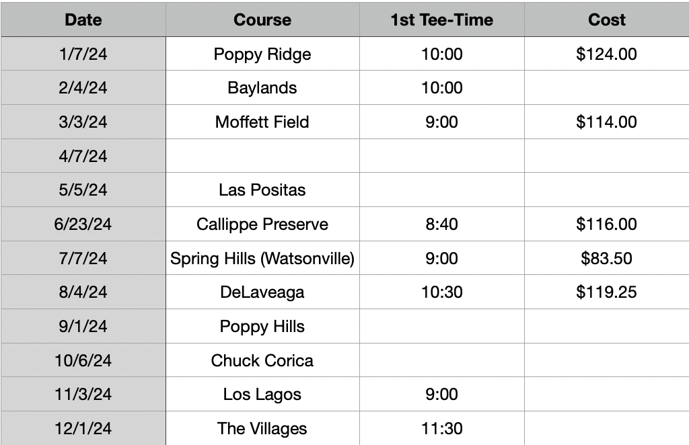
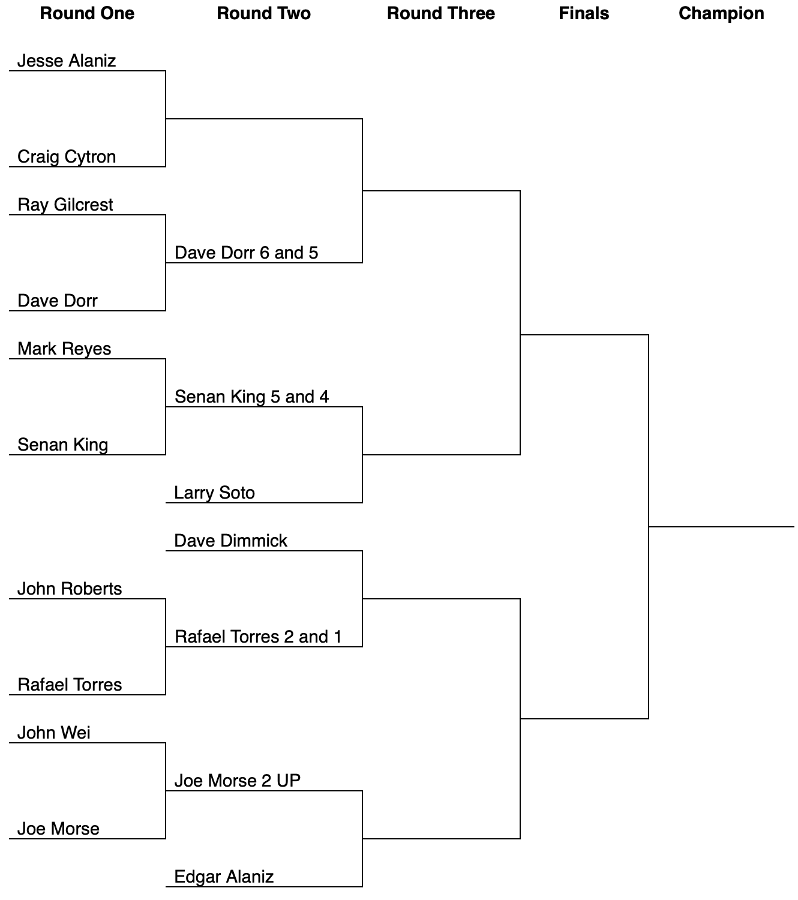
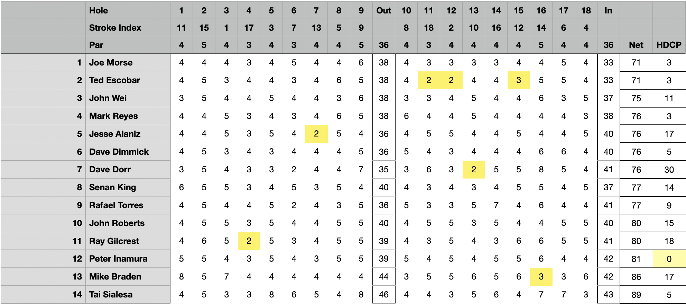

December Newsletter at The Villages
| Place | Name | Net Score |
|---|---|---|
| 1st Place | Joe Morse(T/B) | 71 |
| 2nd Place | Ted Escobar | 71 |
| 3rd Place | John Wei | 75 |
| 4th Place | Mark Reyes (T) | 76 |
| 4th Place | Jesse Alaniz (T) | 76 |
| 4th Place | Dave Dimmick (T) | 76 |
| 4th Place | Dave Dorr (T) | 76 |
Last Updated: January 3, 2023, 08:00
January's Tournament will be held at Poppy Ridge on Sunday, January 7 at 10 AM. 
It is imperative that you arrive no later than 30 minutes prior to the first tee time. Failure to do so causes significant inconvenience for those responsible for collecting money and checking people in, as they are unable to warm up. Additionally, arriving early will not only alleviate this issue but also enable you to play better.
2023/2024 Match Play Round One Results:
At the tee box, we had some thrilling head-to-heads. Dave D must have been swinging like he's got that driver on a string, taking down Ray with a solid 6 and 5 win – talk about staying out of the bunkers and hitting the fairway every time!
Then we swung over to Mark versus Senan, where Senan King played like he had the golden putter, securing a 5 and 4 victory. That's the kind of lead that makes the back nine feel like a victory lap!
In the matchup of John R versus Rafael, Rafael Torres edged out a 2 and 1 win. That's clutch golf right there, probably sinking a pressure putt on the 17th to close it out.
And closing the front nine, John W against Joe saw Joe Morse finishing 2 UP – must've felt like he was in the zone, hitting greens in regulation all day long.
Looks like Jesse A and Craig C are the last pair in the clubhouse to tee off and close out the first round. The anticipation must be like waiting for a slow group ahead to clear the green. Once they sink their last putts and tally up the score, we'll know who's advancing to take on Ray Gilcrest
CPs: Senan King (#4) Ted Escobar (#6) Ted Escobar (#11)
Long Drive: Mark Reyes
Low Putts: Mark Reyes (28)
High Putts: Senan King, Mike Braden (41)
Birdie Shooters: Joe Morse (2,13,14,16) Ted Escobar (11,12,15) Mark Reyes (2,16,18) Jesse Alaniz (7) Peter Inamura (7) Mike Braden (16)
How Did We Do? Hole 2 and 7 must have been playing friendly, perhaps with favorable pin placements or gentle breezes, allowing our players to average scores just a smidge over par. These holes must have been like a kindly course marshal, letting the players through with a smile. Now, hole 5 must have been the course's own version of Amen Corner, giving our golfers a bit of the old one-two with an average of 1.6 strokes over par. This hole must've had its defenses up – maybe it was a tricky green or a stiff wind, or perhaps the rough was just a bit more rugged there. It's all part of the game – some holes you read like a friendly putt, others you just have to tip your cap to and say, "Well played," as you scribble down a number you'd rather not.
Low Gross: In the round we just witnessed, Joe Morse and Ted Escobar both carded the low gross, swinging in with impressive scores. When it came down to the tiebreaker, we took a gander at the last 6 holes, where the grit of the game truly shows. Joe Morse, with his steady hand and keen eye, had the edge over the final stretch, showcasing his ability to stay cool under the back-nine pressure. It was his performance in the clutch that clinched it, proving once again that in golf, every stroke counts, and the game isn't over until the final putt drops.
Swinging into the clubhouse leaderboard, we had the 3-Man Cha, Cha, Cha team event that had the scorecards buzzing. The trio of Morse, Wei, and Dimmick played like they had the golden touch, posting a sizzling score of 140, a fantastic four under par, making them the top dogs of this round.
Hot on their heels was the team of Escobar, Gilcrest, and Dorr, who finished just a stroke behind at 141, three under par – solid teamwork keeping them well within birdie range of the leaders.
Further down the fairway, the teams of Torres, Roberts, J Alaniz, and King, Braden, Reyes had more of a rollercoaster round, finishing at 150 and 151 respectively, which had them over par but no doubt with stories of "the one that got away" on the greens.
In this dance of Cha, Cha, Cha, Morse, Wei, and Dimmick led the ballroom with a score that had the rhythm of a perfectly synced swing – smooth, precise, and with just the right amount of flair!
Swing into action, let's tally up those skins from this round of golf!
Ray Gilcrest got the ball rolling with a net birdie on hole #4, a neat way to get on the scorecard. Jesse Alaniz soared like an eagle with a net eagle on #7, nabbing his skin with style.
Ted Escobar was the day's big earner, snagging three skins with some sharpshooting – a net and gross birdie on #11, a stellar net eagle on #12, and another net birdie on #15. That's playing the course like it's his backyard!
Dave Dorr joined the payday parade with a net eagle on #13, showing he's got game when the stakes are high. Mike Braden swooped in on #16 with a gross birdie that translated into a net eagle, a double delight that's sure to make his wallet a bit heavier.
Finally, Mark Reyes put a cherry on top with a gross and net birdie on the closing hole #18, proving it's not over till it's over.
Each skin was worth $7.50, turning those special shots into sweet victories. That's golf for you – where a single stroke can turn into a prize, and every hole offers a new chance to shine!
| Place | Name | Net Score |
|---|---|---|
| 1st Place | Mark Reyes | 66 |
| 2nd Place | Jesse Alaniz | 69 |
| 3rd Place | Rafael Torres | 70 |
| 4th Place | Edgar Alaniz (T) | 71 |
| 4th Place | Bob Peabody (T) | 71 |
| Place | Name | Net Score |
|---|---|---|
| 1st Place | Dave Dorr | 69 |
| 2nd Place | Jesse Alaniz | 70 |
| 3rd Place | Joe Morse | 73 |
| 4th Place | Quincy Virgilio | 75 |
| Place | Name | Net Score |
|---|---|---|
| 1st Place | Edgar Alaniz | 64 |
| 2nd Place | Quincy Virgilio | 66 |
| 3rd Place | Ray Gilcrest (T) | 70 |
| 3rd Place | Antonio Villa (T) | 70 |
| Place | Name | Net Score |
|---|---|---|
| 1st Place | Steve Zamudio | 66 |
| 2nd Place | Bob Peabody | 67 |
| 3rd Place | Dave Dorr | 70 |
| 4th Place | John Wei (T) | 71 |
| 4th Place | Craig Cytron (T) | 71 |